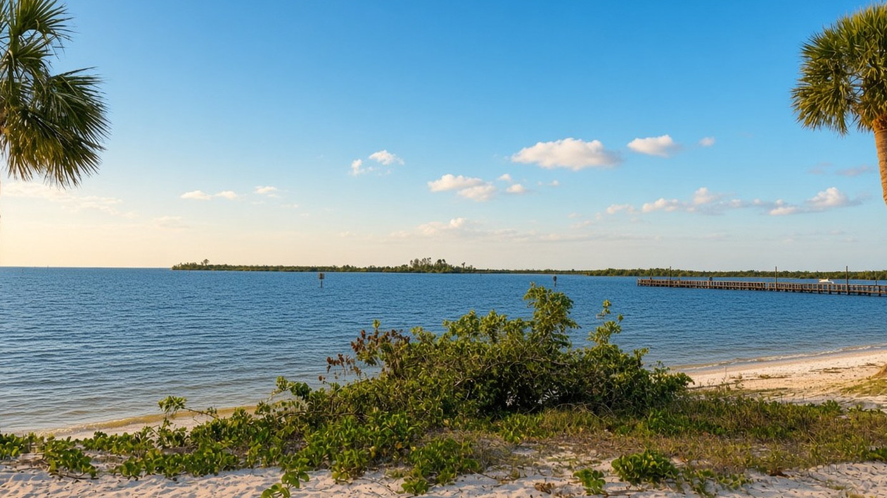

Draft preview for review. Not published. Images shown from local copies.
Living in Port Charlotte, FL
Port Charlotte is one name for several markets: canal homes with harbor access, locked-canal communities, and quiet inland streets.
Port Charlotte sits on the north side of Charlotte Harbor and the Peace River, across the water from Punta Gorda. Below is the short guide we give people searching for Port Charlotte homes for sale: the numbers, the ZIP codes, the schools, and what to check before you write an offer.
66,133
residents, ACS 2020-2024
55.4
median age. The county is 59.9
$269,900
median owner-reported home value. County $328,900
83.2%
of occupied homes are owner-occupied
Source: U.S. Census Bureau ACS 2020-2024, Port Charlotte CDP; ACS, Charlotte County.
The basics
Why one town name covers so many price points.
Port Charlotte is an unincorporated census-designated place governed by the Charlotte County Board of County Commissioners. It was developed in the 1950s on a large platted grid, which is why 1970s and 1980s homes sit next to newer construction. Only 16.6 percent of its housing units were built in 2000 or later.
For the full breakdown, read Port Charlotte real estate by the numbers.

Port Charlotte Beach Park on Charlotte Harbor.
ZIP codes
ZIP code is the fastest first filter.
The five main Port Charlotte ZIP areas have median owner-reported home values from $237,700 in 33952 to $386,800 in 33981, and median years built from 1977 to 2001, according to ACS 2020-2024 data.
| ZIP | Median value | Median year built |
|---|---|---|
| 33952 | $237,700 | 1977 |
| 33980 | $241,500 | 1992 |
| 33948 | $298,700 | 1987 |
| 33954 | $332,600 | 1997 |
| 33981 (Gulf Cove area) | $386,800 | 2001 |
Source: ACS, ZIP areas 33948, 33952, 33954, 33980 and 33981.
Owner-reported values are survey estimates, not sale prices. ZIP Code Tabulation Areas only approximate ZIP codes.
Neighborhoods
Water access changes the house.
Port Charlotte homes fall into three groups: open-canal and harbor-access homes, homes behind a county-run lock such as South Gulf Cove, and non-waterfront streets. Start with how you plan to use the water, then look at the specific property.
Schools
Graded by the state for 2025-26.
Charlotte County Public Schools earned an A for 2025-26. In Port Charlotte, Meadow Park Elementary, Liberty Elementary, and Port Charlotte Middle earned an A, and Myakka River Elementary, Kingsway Elementary, Murdock Middle, and Port Charlotte High earned a B.
| School | Grade | Share of points |
|---|---|---|
| Meadow Park Elementary | A | 67% |
| Liberty Elementary | A | 66% |
| Myakka River Elementary | B | 59% |
| Kingsway Elementary | B | 54% |
| Port Charlotte Middle | A | 69% |
| Murdock Middle | B | 62% |
| Port Charlotte High | B | 60% |
Source: Florida Department of Education, 2025-26 School Grades.
Schools are assigned by attendance boundary. See every grade in our Charlotte County schools guide.
Before you buy
Age, water, and storms drive the big costs.
Before buying in Port Charlotte, check the year built and get a four-point and wind mitigation inspection on older homes, confirm the flood zone and get insurance quotes early, ask how the water connects to the harbor on canal homes, and plan your homestead filing if it will be your permanent residence.
With most homes built before 2000, roof age and systems matter. Read what homeowners insurance costs here and how a wind mitigation inspection helps.
Look it up on the parcel record. Our Property Appraiser guide shows where.
Open canal, locked canal, or no water: ask how a boat gets to the harbor and what bridges are on the way.
File by March 1. Amendment 3 raises the non-school exemption starting in 2027. See our homestead guide.
Source: Florida Department of Revenue, PTO 26-21.
FAQs
Is Port Charlotte a city?
No. Port Charlotte is an unincorporated census-designated place of 66,133 people in ACS 2020-2024 data, governed by the Charlotte County Board of County Commissioners. Punta Gorda is the only incorporated city in the county.
What are the zip codes for Port Charlotte, FL?
Port Charlotte homes use 33948, 33952, 33953, 33954, and 33980, and 33981 covers the Gulf Cove area on the Cape Haze peninsula. Median owner-reported home values across the five main ZIP areas run from $237,700 to $386,800 in ACS 2020-2024 data.
What is the median home value in Port Charlotte?
The ACS 2020-2024 median owner-reported value for Port Charlotte is $269,900, below Charlotte County's $328,900. It is a survey estimate, not a sale price, so ask for recent comparable sales on the specific street.
Are there good schools in Port Charlotte?
Charlotte County Public Schools earned an A for 2025-26. In Port Charlotte, Meadow Park Elementary, Liberty Elementary, and Port Charlotte Middle earned an A, and Murdock Middle and Port Charlotte High earned a B.
Does Port Charlotte have canal homes?
Yes. Port Charlotte has open-canal and harbor-access homes, communities behind a county-run lock such as South Gulf Cove, and many non-waterfront streets. Each has a different checklist for boats, seawalls, flood zones, and insurance.
Looking at homes in Port Charlotte?
Tell us how you plan to use the water, and we will narrow it to the right ZIP codes and streets. Call or text The Helgemo Team at (941) 770-2275.